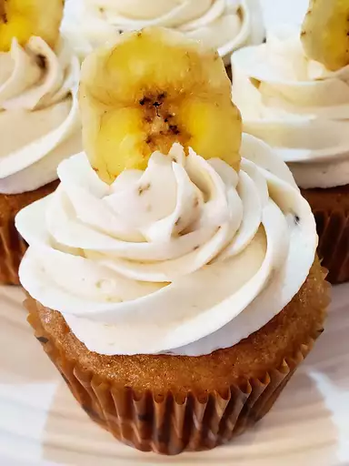

Peanut Butter Cupcakes

Description
Combine banana butter frosting with this delicious peanut butter cupcake recipe from Lisa Altmiller's
grandmother, Lottie, for a decadent dessert. Frost with Lisa's Banana Butter Frosting, then garnish with banana
chips.
Ingredients
- 1 ½ cups cake flour
- 2 teaspoons baking powder
- ½ teaspoon baking soda
- ¼ teaspoon salt
- 1 cup packed dark brown sugar
- ½ cup creamy peanut butter, at room temperature
- 3 tablespoons applesauce
- 3 tablespoons vegetable oil
- 1 teaspoon vanilla extract
- 2 eggs
- 1 cup buttermilk
Steps
- Preheat the oven to 350 degrees F (175 degrees C). Line twenty four 2 1/2-inch muffin cups with paper liners.
- Stir flour, baking powder, baking soda, and salt together in a small bowl.
- Bake in the preheated oven until a toothpick inserted into the center comes out clean, 14 to 16 minutes.
Cool in the tins for 5 minutes. Loosen edges using a knife; carefully remove cupcakes and transfer to a wire
rack to cool completely.